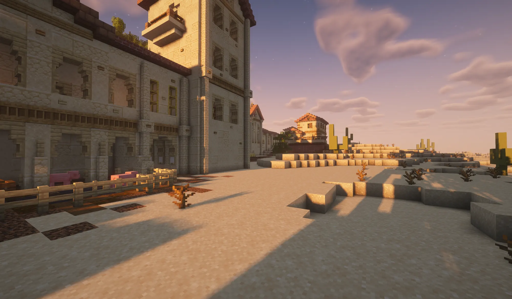

De Stad
Zandsteen onder de woestijnzon
Tussen de duinen en cactussen van Quartum verrijst Verathiel: zandstenen muren, rode daken, zuilengangen en klokkentorens. Het plan is een grote stad in Romeinse stijl, met basilieken waar het Licht gevierd wordt.
Galerij
De stad in beeld
Klik op een beeld om het te vergroten.